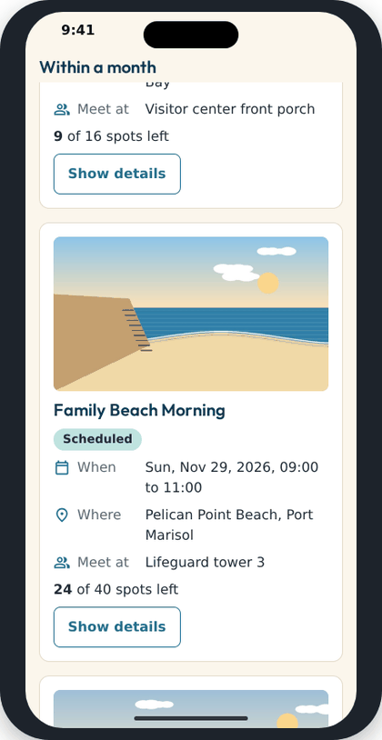
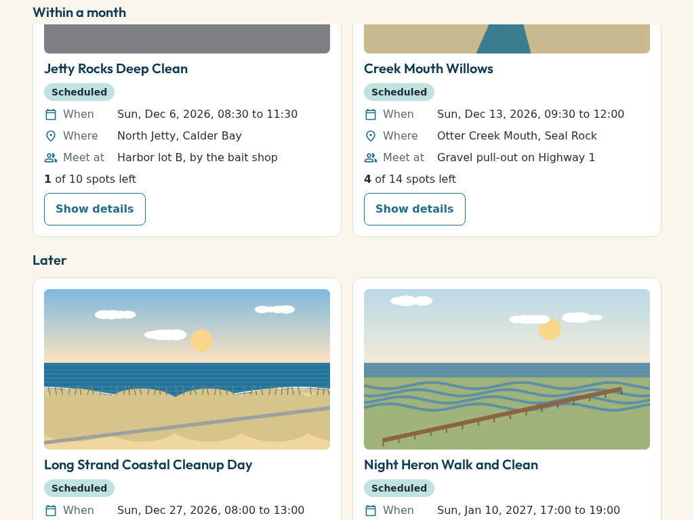

Instructor copy —contains answers & timing · not for students
Instructor Kit · Facilitator Guide
Session 8: FlatList, SectionList and Big Lists
How to teach Session 8: Lesson 3.1 turns the Cleanups screen into a real list (virtualization, keys from the data, the empty, loading, failed and refreshing states, sticky sections) and Lesson 3.2 makes it fast and paged (FlashList's recycling, measured, recycling-safe state, infinite scroll that asks once), with the lessons' list mistakes run headless and two labs; then the kickoff of the Part 1 project, Fix-It Tables for the Alder Row Repair Café.
2 lessons3 hrs sessionLessons 3.1–3.2Part 1 project kickoffSession 8 of 26 · Part 1
How to Use This Guide
Same rhythm for both lessons: frame (the goal and one mental model) → live demo (you type, they follow) → guided lab (a kit lab: new practice on the lesson's ideas, never the lesson's own project) → start the lesson's own project. The rest of each lesson project, the exercises, the quiz and the journal are homework.
Session 8 is a big one: two 145- and 150-minute lessons (Module 3, Lists) AND the kickoff of the Part 1 project, Fix-It Tables for the Alder Row Repair Café (50 minutes at the end). The lessons get 60 minutes each in the room; the kickoff makes sure every learner leaves with the project running and TODO A done. Session 9 is the check-in, the demos and the Part 1 assessment.
Type, do not paste. Every command below was run to produce the output printed under it, in a learner's terminal (Node 24) on a copy of the app exactly as a learner has it at the end of Lesson 3.1 or 3.2, and on the course API. Where the lesson shows the same command, the kit's output is the lesson's, word for word (only the Date header differs). Ask for a prediction before every run.
No phone was used to make this kit. The lessons' list mistakes run headless in Jest (React Native's own FlatList, no browser), the labs run in Jest, and the web preview shows the app on the projector. What only a phone shows (the pull-to-refresh gesture, the performance monitor, how a long list feels under a thumb) is described the way the lessons describe it. Have your own phone with Expo Go ready to show the pull.
Keep lesson_09.html and lesson_10.html open for the tables (FlatList's props, virtualization versus recycling, the lab's numbers) and the screenshots. Labs live in labs/module-08/; the Part 1 project in labs/projects/part1-alder-row-repair-cafe/ (starter handed out; solution and INSTRUCTOR-NOTES yours). Teal blocks are hands-on, amber blocks are watch-outs.
The #1 risk of Session 8: the kickoff gets squeezed
Two list lessons are rich, and every demo invites one more experiment. But the Part 1 project is what Part 1 is graded on, and a learner who leaves without it running loses the week. Protect the kickoff's 50 minutes: the lessons' room time is the frame, one demo, one lab task and the first project steps, nothing more. The benchmark is never run live (show the lesson's numbers); the grouped SectionList and the flattened FlashList rows are read, not typed. If a lesson block runs long, cut its project start first: the steps are in the lesson, done at home.
Before the Session
☐ Run the kit checks once:python3 labs/check_labs.py module-08 (12 runs, about two and a half minutes: both starters fail their tests as shipped, the solutions pass the tests, tsc and the linter, Lab 3.2's solution exports for the web) and python3 labs/check_labs.py projects/part1-alder-row-repair-cafe (6 runs: the project's starter fails all 13 tests and its type tests, the model passes everything and exports for the web).
☐ Files to hand out:labs/module-08/ without the solution/ folders; labs/projects/part1-alder-row-repair-cafe/ with TASKS.md, RUBRIC.md and starter/ only (never solution/). From the course downloads: lesson-09-start.zip and lesson-10-start.zip for anyone whose app is behind (unzip, npm ci in shoreline-crew, .env.example to .env.local as the README says).
☐ Projector machine: the API running (node server.ts), a copy of lesson-09-end and one of lesson-10-end with npm ci done and the API address in .env.local, each in its own terminal; a copy of Lab 3.1's solution/ with the kit's src/mistakes.test.tsx (Answer Key); the Part 1 project's starter/ and solution/ (the solution's web preview with npm run web, for the kickoff's tour). Browser tabs: both lesson pages, the web preview at a phone size.
☐ Board, before learners arrive: the two mental models (the sign-in table: roster = data, tags = drawn rows, ID = key; the bucket pile: separate piles = getItemType, empty the bucket = useRecyclingState); the three paging rules (ask once · stop after a failure · never twice); and the kickoff's TODO list A to D with the milestones.
☐ Print or share: the workbook (it has the kickoff pages: the brief, the TODOs, the rubric, the milestones), sticky notes for the exit ticket.
Known environment traps
Symptom
Cause
Fix
Changing numColumns on the fly is not supported (a blank page or a red screen)
The window got wider and the FlatList has no key={columns}
key={columns}; FlashList (3.2) needs none
columnWrapperStyle not supported for single column lists
The keyboard closes after every letter in the list's search field
ListHeaderComponent={() => ...}: a new component each render
An element: const header = (...)
The list shows nothing, or does not scroll
Its parent has no height, or the list sits inside a ScrollView
The list IS the screen: {...screen} from useScreenScroll()
The refresh spinner never stops
setRefreshing(false) only on success
Also in the .catch
estimatedItemSize does not exist after copying a FlashList answer from the web
A FlashList 1 answer; version 2 has no such prop
Delete it (Lesson 3.2's version note)
Yellow Animated: useNativeDriver is not supported in the browser console
FlashList's pinned heading in the web preview
Harmless: a warning, not an error (Lesson 3.2)
Another card shows a card's open details after scrolling
useState inside a recycled FlashList row
useRecyclingState(false, [event.id])
The list asks for the same page again and again
onEndReached={loadNextPage} with no idle check
Only when more.status === 'idle'; Try again after a failure
Session 8 Agenda (3 hours)
Clock
Minutes
Segment
What happens
0:00
10
Warm-up: Lesson 2.5 in three questions
Retrieval from Session 7: a color by job, `Platform.OS`, `useColumns`; then today's plan.
0:10
10
3.1 Frame and mental model
The sign-in table: the roster is the data, the name tags are the drawn rows, the ID is the key.
0:20
15
3.1 Live demo
A number key tsc names; the two list mistakes no checker sees (an inline header, numColumns without a key), run headless.
0:35
15
3.1 Guided lab
labs/module-08/l3_1-flatlist-and-sectionlist/starter: Task 1 in pairs, a list that keeps its typing and survives a wider window.
0:50
10
3.1 Start the lesson project
Steps 1 and 2 (useScreenScroll, the three empty-list components). Steps 3 to 7 go home.
1:00
10
Break
Projector: the list lab's numbers table from Lesson 3.2. Learners: `shoreline-crew` at the end of Lesson 3.1 (or `lesson-10-start`).
1:10
10
3.2 Frame and mental model
The bucket pile: recycling versus virtualization, measured; the supply runs for paging.
1:20
15
3.2 Live demo
The paging headers, a FlatList-only prop tsc names, the benchmark refs and the honest cast, the footers.
1:35
15
3.2 Guided lab
labs/module-08/l3_2-big-lists-fast/starter: Tasks 1 and 2, a recycled row and a paging hook that asks once.
1:50
10
3.2 Start the lesson project
Steps 1 and 3 (install FlashList, the flattened rows). The lab screen and Steps 4 to 7 go home.
2:00
50
Part 1 project kickoff
The Fix-It Tables brief for the Alder Row Repair Café, the rubric, the starter run as shipped, TODO A in pairs, TODO B started.
2:50
10
Wrap-up
Exit ticket (3 questions), homework, bring list for Session 9 (the project check-in and the Part 1 assessment).
Total
180
Ends at 3:00.
In the room. The lesson pages estimate 145 + 150 = 295 minutes for a learner working alone; after the warm-up, the break, the kickoff and the wrap-up, the room has 60 minutes per lesson: frame, demo, lab and the first project steps.
Goes home (about 2 to 3 hours). Lesson 3.1's project Steps 3 to 7 (the FlatList screen, every state, pull to refresh, Group by date, check and commit); Lesson 3.2's project Steps 2 and 4 to 7 (the lab screen and its four reports, one FlashList, recycling-safe cards, five at a time, delete the lab, commit); both labs' remaining tasks; each lesson's Hands-on Exercises and Quick Quiz; both journal entries; and the Fix-It Tables project to the Session 9 milestone (TODO B and C done, TODO D's list with its header and count). It is a heavy week: say so, and say which parts come first (the two lesson projects' code: Part 2 builds on it).
Protect, in this order: the kickoff's 50 minutes (every learner leaves with the starter running and TODO A done); the 3.1 "two mistakes no checker sees" step; the 3.2 paging rules. Cut first: the 3.1 empty-states tour and the 3.2 honest-cast step (both are in the lessons), then the two project starts (send them home).
Opening Segment
0:00
Warm-up: Lesson 2.5 in Three Questions
10 min
Sequence
Three cold-call questions (6m), from Session 7: "A style sheet at the bottom of a file says backgroundColor: lightColors.page. What happens in dark mode?" (it stays light: colors come through createThemedStyles, props from useTheme()); "When is Platform.OS the right tool?" (a real platform difference, such as the web preview having no pull gesture: today's Refresh button); "Where does the 2 in two columns come from?" (useColumns(): the window's width against layout.twoColumns, 700).
Today's plan (4m): two list lessons and the Part 1 project kickoff. "Lists are where apps feel fast or slow. Today the Cleanups screen becomes a real list, then a fast one that loads as you scroll. At the end you start the project that closes Part 1."
Lesson Plans
3.1
FlatList and SectionList
60 min
Objectives (from the lesson page)
Explain why a FlatList beats a ScrollView with map for lists, and what "drawing only what is near the screen" means
Build a typed FlatList: data, renderItem, a stable keyExtractor, a header, and columns with numColumns
Show the right thing when a list has no items: loading, a failed load with a retry button, or "nothing matches"
Add pull to refresh with refreshing and onRefresh, and know what each platform (and the web preview) does with it
Group items under headings with SectionList and sticky section headers
Timing in the room
10m
Frame: why a list component (1,000 rows: 1,000 drawn versus 358); the sign-in table; FlatList prop by prop
15m
Live demo: the finished list clean, a number key tsc names, two mistakes no checker sees, the empty states
15m
Guided lab: l3_1-flatlist-and-sectionlist/starter, Task 1 in pairs
10m
Start the lesson project: Steps 1 and 2
Mental model to say
From the lesson: "On Coastal Cleanup Day, 400 volunteers are on the roster. The crew at the sign-in table does not write 400 name tags at dawn; they write tags for the people in line and the next few walking up the beach, and put away the pages of people who already went down to the water. The roster (your data) is complete the whole time; only the tags (the drawn rows) come and go. And because tags come and go, each volunteer needs an ID that does not depend on where they stand in line. That ID is the list's key."
Then the measured numbers from the lesson's table: a ScrollView with map drew 1,000 rows when it opened; a FlatList 358, about ten screens above and below, and 400 at the end. Then the second picture, for SectionList: the tide table, months as headings over the same tides. Write the list draws what is near the screen; your item must be drawable from its data alone under the two pictures.
Live demo (you type, they follow)
Two copies on the projector: the app at the end of Lesson 3.1 (lesson-09-end) and Lab 3.1's solution folder for the headless runs. Ask for a prediction before every run.
The finished list, clean (2m). Open src/app/index.tsx in a copy of the app as a learner has it at the end of Lesson 3.1 (lesson-09-end from the downloads). Read the FlatList's props top to bottom with the lesson's table beside it: data, keyExtractor, renderItem, numColumns, the header and the empty component, refreshing and onRefresh. Then the two checks the lesson's Step 7 asks for:
shoreline-crew/src/app/index.tsx
<FlatList
{...screen}
// A FlatList cannot change its number of columns: a new key makes React build a new one
key={columns}
data={cards}
keyExtractor={(card) => card.event.id}
renderItem={renderCard}
numColumns={columns}
columnWrapperStyle={grid ? styles.row : undefined}
ListHeaderComponent={header}
ListEmptyComponent={empty}
refreshing={refreshing}
onRefresh={refresh}
/>
tsc prints nothing; npx expo lint prints nothing but Expo's two env: lines (it read .env.local, as every Expo command does from Lesson 1.3 on). That is clean.
A key that is not a string (4m). Ask: "Capacity is a number on every cleanup. Could it be the key?" Change line 178 to keyExtractor={(card) => card.event.capacity} and run the checker:
npx tsc --noEmit
src/app/index.tsx:178:7 - error TS2322: Type '(card: Card) => number' is not assignable to type '(item: Card, index: number) => string'.
Type 'number' is not assignable to type 'string'.
178 keyExtractor={(card) => card.event.capacity}
~~~~~~~~~~~~
node_modules/react-native/types_generated/Libraries/Lists/FlatList.d.ts:107:3
107 keyExtractor?: ((item: ItemT, index: number) => string) | undefined;
~~~~~~~~~~~~
The expected type comes from property 'keyExtractor' which is declared here on type 'IntrinsicAttributes & IntrinsicClassAttributes<FlatList<Card>> & Readonly<FlatListProps<Card>>'
Found 1 error in src/app/index.tsx:178
The kit's run is the lesson's card, word for word. Read it from the top: the second line names it (Type 'number' is not assignable to type 'string'); the indented part points into React Native's own FlatList.d.ts to show where the rule is written; the fix is always in your file. Then the second question: "as a string, would capacity be a good key?" (no: not unique). Undo.
Two mistakes no checker sees (6m). "The lesson measured two more list mistakes in the web preview. Jest renders the same React Native FlatList, so the kit runs them headless." Show the demo test (Answer Key, Lab 3.1 folder): a header made inside the screen, and numColumns changing from 1 to 2 with no key. Predictions first: will tsc catch either? Then:
expect(instance).toHaveDisplayValue()
Expected instance to have display value:
lo
Received:
l
Invariant Violation: Changing numColumns on the fly is not supported. Change the key prop on FlatList when changing the number of columns to force a fresh render of the component.
The typed lo became l: a new header component on every render, so a new text field after each letter (on a phone, the keyboard closes after every letter). The second is the invariant the lesson's browser console showed, the same words; on a phone it is the red screen. tsc and the linter printed nothing for either. The fixes: build the header as an element, and key={columns}.
Empty, loading, failed, refreshing (3m). Show the lesson's screenshots: the spinner under the header, then the error view with Try again. Say the rule: the header shows in every state, because it is the list's header. Then the refresh rule: refreshing back to false on success AND failure. Last, the web preview: no pull gesture (react-native-web's RefreshControl draws a plain View), so Shoreline Crew adds a Refresh button on the web only. The pull itself is for Expo Go: the course could not run a real phone while it was checked, so the phone's side follows the lesson and React Native's documentation.
When the request fails, the same empty list shows the ErrorView: what happened, in words a volunteer understands, and one button to load again.
Three mistakes to expect, and how to coach each
The list inside <Screen scroll>. It looks right and draws everything again (virtualization gone; React Native warns on a phone, the web preview is silent). Coach: "Which component is the screen's scroll view now?" The list is: {...screen}.
Index keys, or no keyExtractor. React Native 0.88 quietly falls back to the index. Coach with the lesson's measured bug: open Weekend Cove's details, search calder, and the details stay open on Jetty Rocks.
Forgetting setRefreshing(false) on failure. The spinner never stops. Coach: "What happens with no signal?" (Self-check Q4.)
Guided lab
Folder: learners work in labs/module-08/l3_1-flatlist-and-sectionlist/starter/ (task sheet labs/module-08/l3_1-flatlist-and-sectionlist/TASKS.md); your reference is labs/module-08/l3_1-flatlist-and-sectionlist/solution/. New practice on the lesson's ideas: the six beaches of GET /api/sites (real answers in fixtures/) as a FlatList with a search field above them, three kinds of empty, and the beaches under their towns in a SectionList. Jest types and presses like a finger; no phone, no API.
Run it as shipped (3m).npm test: seven tests fail. Read the two Task 1 failures from the top together:
● Task 1: the search field keeps every letter you type
expect(instance).toHaveDisplayValue()
● Task 1: the list survives a wider window (one column, then two)
Invariant Violation: Changing numColumns on the fly is not supported. Change the key prop on FlatList when changing the number of columns to force a fresh render of the component.
Then npm run typecheck and npm run lint: nothing after their > lines. Every bug in this lab type-checks and lints clean.
Task 1 in pairs (8m): the header as an element, and key={columns}. Circulate for learners who move the TextInput out of the list entirely (it works, and the search no longer scrolls with the list: ask why the lesson keeps it in the header).
Expected when everything is done (the solution's run):
PASS src/lab.test.tsx
✓ Task 1: the search field keeps every letter you type
✓ Task 1: the list survives a wider window (one column, then two)
✓ Task 2: while loading: the search field and "Loading beaches…"
✓ Task 2: after a failure: the message and a Try again that loads again
✓ Task 2: nothing matches: the message, and Show all beaches clears the search
✓ Task 3: groupByTown: three towns in alphabetical order, two beaches each
✓ Task 3: the beaches under their towns: the towns are headings
Tests: 7 passed, 7 total
Debrief (4m): "Which tool found the inline header: tsc, the linter or the test?" (only the test: running it). "What does a new key tell React?" (a different list: build a new one).
Fast finishers: Task 2 (the three empty states with the given components) and Task 3 (groupByTown and a SectionList with sticky town headings).
Start the lesson project
The lesson project is The Cleanups List, seven steps in shoreline-crew. In the room, do Steps 1 and 2 (10 minutes): useScreenScroll in Screen.tsx, then LoadingView, ErrorView and EmptyState. npx tsc --noEmit prints nothing after each.
Done in the room = the four files typed, tsc silent, the app unchanged in the web preview (nothing uses the new components yet).
Goes home: Steps 3 to 7: the FlatList screen in one or two columns, every state (a slow API with node server.ts --latency=500-3000, a stopped one, volcano), pull to refresh and the web-only Refresh button, Group by date, check and commit. The finished code is lesson-09-end in the downloads.

With Group by date on, a SectionList shows the same cards under headings. stickySectionHeadersEnabled pins the current heading to the top while its cards scroll under it.
Checks for understanding
Ask these out loud during the demo and the lab:
What does a FlatList draw that a ScrollView with map does not? Answer: only the rows near the screen (and more as you scroll); the ScrollView draws every child at once.
Where does a list's key come from, and why not the index? Answer: the item's id; an index points at another item after filtering, and its state moves with it.
Which three things can ListEmptyComponent show in Shoreline Crew? Answer: the spinner while loading, the error with Try again, "No cleanups match your search." with Show all.
Why a Refresh button in the web preview only? Answer: a browser has no pull gesture for a list; Platform.OS === 'web' is a real platform difference.
Workbook self-check, items Q1 to Q6 (at the end of the block or at home).
Answers: Q1B) ScrollView 1,000; FlatList 358, about ten screens above and below what shows; Q2Each render makes a new function, so React sees a new component and builds a new text field after the first letter; pass an ELEMENT (const header = (...)); Q3C) keyExtractor={(card) => card.event.id}; Q4D) setRefreshing(false) in the .catch, not only in the .then; Q5A) A browser has no pull gesture for a list, and react-native-web's RefreshControl draws a plain View: test the pull in Expo Go; Q6B) stickySectionHeadersEnabled, set explicitly, with a background on the heading. Full set with explanations in the Answer Key.
Differentiation
Support: a card with the FlatList's three must-haves (data · renderItem · keyExtractor) and the two run-time mistakes (header = element · key={columns}). Learners whose app is behind start Lesson 3.1 from lesson-09-start tonight.
Stretch: Lab 3.1 Tasks 2 and 3; the lesson's Exercise 4 (Back to the top with scrollToOffset) and the Bonus Challenge (two columns in the grouped view).
3.2
Big Lists, Fast
60 min
Objectives (from the lesson page)
Explain how FlashList's recycling differs from FlatList's virtualization, and measure both in the web preview
Move a FlatList to FlashList 2 and adapt what is different: spacing inside the cells, no padding on the list's own style, item types and column spans
Keep each item's state with the right item when its cell is recycled, with useRecyclingState
Load a list page by page from the API's X-Total-Pages with onEndReached, with loading, failed and end-of-list footers that never ask twice or loop
Show items under headings in one FlashList by flattening sections into rows with sticky header indices
Timing in the room
10m
Frame: recycling versus virtualization; the bucket pile; the lesson's measured numbers; the supply runs for paging
15m
Live demo: the paging headers, a FlatList-only prop, the honest cast, paging that ships
15m
Guided lab: l3_2-big-lists-fast/starter, Tasks 1 and 2
10m
Start the lesson project: Steps 1 and 3
Mental model to say
From the lesson: "Last lesson's sign-in table wrote name tags for the people in line and threw the old ones away. Buckets work differently: when a volunteer comes back up the beach, their bucket goes on the pile, and the next volunteer in line takes it. FlashList treats rows like buckets. Two rules come with that: keep the buckets for different jobs in separate piles (a heading is not a card: getItemType), and empty the bucket before handing it on, or the next volunteer walks off with someone else's shells (item state: useRecyclingState)."
Then the numbers, from the lesson's lab table (the course measured them in the web preview, three runs each; the learners' numbers will differ, the pattern should not): rows created during the scroll test, thousands for FlatList against 39 for FlashList; frames per second near 60 for both at full speed, and FlatList falling behind with the CPU slowed six times. Say the limit with them: the web preview counts, it does not speak for a phone's native side or memory; a real phone and a release build have the final word.
Then the supply runs for paging: one runner at a time (ask once), no new runner every second after the van was locked (stop after a failure), check the crew does not already have that box (no duplicates).
Live demo (you type, they follow)
The API in terminal 1; a copy of lesson-10-end in terminal 2. Never run the benchmark live (it takes minutes); show the lesson's table and its lab screenshot.
The paging headers (3m). Terminal 1 runs the API. Terminal 3 (any folder): the lesson's command, which asks for the second page of upcoming cleanups, five at a time, and shows only the headers:
HTTP/1.1 200 OK
cache-control: no-store
content-type: application/json; charset=utf-8
link: <http://localhost:4000/api/events?when=upcoming&page=1&perPage=5>; rel="first", <http://localhost:4000/api/events?when=upcoming&page=1&perPage=5>; rel="prev", <http://localhost:4000/api/events?when=upcoming&page=2&perPage=5>; rel="last"
vary: Origin
x-total-count: 8
x-total-pages: 2
Date: (the time of your request)
Connection: keep-alive
Keep-Alive: timeout=5
Transfer-Encoding: chunked
The kit's run equals the lesson's card except the Date line (yours is the time of your request). Eight upcoming cleanups, two pages of five. X-Total-Pages is what the app reads to know when to stop: never "fewer than five came back". On PowerShell: curl.exe and NUL instead of /dev/null.
A FlatList-only prop (3m). In a copy of the app at the end of Lesson 3.2 (lesson-10-end), leave columnWrapperStyle={styles.cell} on the FlashList (after numColumns):
npx tsc --noEmit
src/app/index.tsx:221:9 - error TS2322: Type '{ data: SectionRow<Card>[]; keyExtractor: (row: SectionRow<Card>) => string; renderItem: ({ item: row, target }: ListRenderItemInfo<SectionRow<Card>>) => Element; ... 16 more ...; keyboardDismissMode: "on-drag"; }' is not assignable to type 'IntrinsicAttributes & FlashListProps<SectionRow<Card>> & { ref?: Ref<FlashListRef<SectionRow<Card>>> | undefined; }'.
Property 'columnWrapperStyle' does not exist on type 'IntrinsicAttributes & FlashListProps<SectionRow<Card>> & { ref?: Ref<FlashListRef<SectionRow<Card>>> | undefined; }'.
221 columnWrapperStyle={styles.cell}
~~~~~~~~~~~~~~~~~~
Found 1 error in src/app/index.tsx:221
The kit's run is the lesson's card. Skip the first line (every prop it was given, "... 16 more ...") and read the second: Property 'columnWrapperStyle' does not exist. Then the one tsc cannot catch: padding in FlashList's style type-checks, and its documentation says it is not supported; that is why useScreenScroll's frame goes on a View around the list. Undo.
The honest cast (4m). Create the lesson's lab screen (src/app/list-lab.tsx, Step 2) WITHOUT its two as RefObject<…> casts and run the checker:
npx tsc --noEmit
src/app/list-lab.tsx:39:34 - error TS2345: Argument of type 'RefObject<FlashListRef<string> | null>' is not assignable to parameter of type 'RefObject<FlashListRef<any>>'.
Type 'FlashListRef<string> | null' is not assignable to type 'FlashListRef<any>'.
Type 'null' is not assignable to type 'FlashListRef<any>'.
39 const flashTest = useBenchmark(flashRef, done, { startManually: true });
~~~~~~~~
src/app/list-lab.tsx:40:41 - error TS2345: Argument of type 'RefObject<FlatList<string> | null>' is not assignable to parameter of type 'RefObject<FlatList<any>>'.
Type 'FlatList<string> | null' is not assignable to type 'FlatList<any>'.
Type 'null' is not assignable to type 'FlatList<any>'.
40 const flatTest = useFlatListBenchmark(flatRef, done, {
~~~~~~~
Found 2 errors in the same file, starting at: src/app/list-lab.tsx:39
The first lines are the lesson's card (it shows the first error and ...). The ref really can be null before the list exists; the benchmark hooks only use it after the button is pressed, when it is not. With the casts back, tsc is silent and the linter prints only its env: lines. Say the rule: a cast only when you can say that sentence. Do not run the benchmark live: it takes minutes in a browser; show the lesson's numbers table and screenshot instead.
Paging that ships (5m). Open the finished screen's paging code. Walk the three details on the board: ask once (more must be idle), stop after a failure (only Try again asks), never show a cleanup twice (a Set of known ids). Then the footer's three states with the lesson's screenshot of a failed page:
shoreline-crew/src/app/index.tsx
function loadNextPage() {
if (load.status !== 'loaded' || !hasMore) {
return;
}
setMore({ status: 'loading' });
getEvents(upcomingPage(load.page.page + 1))
.then((next) => {
setLoad((current) => {
if (current.status !== 'loaded') {
return current;
}
// A cleanup can move to the next page while you scroll: never show it twiceconst known = new Set(current.events.map((event) => event.id));
const added = next.items.filter((event) => !known.has(event.id));
return { ...current, events: [...current.events, ...added], page: next.page };
});
setMore({ status: 'idle' });
})
.catch((error: unknown) => setMore({ status: 'failed', message: describeError(error) }));
}
// The list is near its end. Only ask when nothing is on its way and the last page did not fail:// after a failure, the Try again button asks (or the list would ask again and again)function onEndReached() {
A failed page shows ErrorView in the footer. The five cleanups already loaded stay, and only Try again asks for page 2 again.
Point at the functional setLoad((current) => ...): the answer arrives later, and the state may have changed (a refresh) in between.
Three mistakes to expect, and how to coach each
State that travels with a recycled card. Open Tide Pool's details, scroll: Creek Mouth Willows shows them open. No tool warns. Coach: "What does FlashList do with the card that scrolled away?" (Lab 3.2 Task 1.)
onEndReached={loadNextPage}. It asks again after every failure (the course measured three requests within a hundredth of a second, hundreds in an earlier layout). Coach: "Who decides when to try again after a failure?" (the volunteer: Try again).
A key on the row inside renderItem. A web habit that defeats recycling (39 rows created became about 1,900 in the lesson's lab). Coach: "Where does FlashList want the key?" (keyExtractor only).
Guided lab
Folder:labs/module-08/l3_2-big-lists-fast/starter/ with labs/module-08/l3_2-big-lists-fast/TASKS.md; your reference is labs/module-08/l3_2-big-lists-fast/solution/. New practice: the PAST cleanups, three to a page (real pages in fixtures/), on FlashList. Jest renders the FlashList with FlashList's own Jest setup (the course app's tests do the same from Lesson 8.2), and MSW answers the requests and counts them.
Run it as shipped (2m).npm test: six tests fail. The Task 2 failures print the asked arrays: the pages the code requested.
Task 1 (4m): the test hands the SAME row another cleanup (what recycling does) and the report is still open. useRecyclingState(false, [cleanup.id]).
Task 2 (7m): the idle check, then the dedupe by id. Circulate for learners who check hasMore only (it is true while page 2 is on its way: the test sees two requests).
Expected when everything is done:
PASS src/lab.test.tsx
✓ Task 1: a recycled row does not keep the last cleanup's report open
✓ Task 2: near the end twice while page 2 is on its way: page 2 is asked for once
✓ Task 2: page 2 fails: the list stops asking until Try again
✓ Task 2: a cleanup that moved to page 2 is not shown twice
✓ Task 3: one heading before the first cleanup of each month
✓ Task 3: the months are headings in the FlashList
Tests: 6 passed, 6 total
Debrief (2m): "Which of these bugs would tsc or the linter have found?" (none). "Why does the test hold page 2 on its way?" (FlashList checks the end again while it waits; that is when a second request happens).
Fast finishers: Task 3 (month headings in one FlashList: flattened rows, getItemType, stickyHeaderIndices).
Start the lesson project
The lesson project is A Fast, Paged Cleanups List, seven steps. In the room, Steps 1 and 3 (10 minutes): npx expo install @shopify/flash-list (it pins 2.3.2, JavaScript only: Expo Go runs it), then SectionRow and flattenSections in src/utils/sections.ts.
Done in the room = FlashList in package.json without a ^, the two new exports typed, tsc silent.
Goes home: Step 2 (the lab screen: four reports, at full speed and with Chrome's CPU throttling at 6x, then deleted), Steps 4 to 7 (one FlashList for both views, recycling-safe cards, five at a time with the three footers, check and commit). The finished code is lesson-10-end.

One FlashList for the grouped view: headings are rows that span both columns (overrideItemLayout), and the current one stays pinned (stickyHeaderIndices). SectionList could not do two columns.
Checks for understanding
Ask these out loud during the demo and the lab:
What happens to a card that scrolls far off the top of a FlashList? Answer: it goes into a pool and is drawn again with another item's data.
How does the app know there is another page? Answer: the API's X-Total-Pages (in PageInfo), compared with the page it has.
What are the three rules that make infinite scroll shippable? Answer: ask once, stop after a failure (only Try again), never show an item twice.
What can the web preview NOT tell you about a list's speed? Answer: a phone's native side, its memory, the real frame rate; measure a real phone and a release build.
Workbook self-check, items Q7 to Q12 (at the end of the block or at home).
Answers: Q7D) Row components created during the scroll test: thousands for FlatList, a few dozen for FlashList; Q8The line after it: Property 'columnWrapperStyle' does not exist; FlashList has no row style, so the spacing lives inside each cell (half the gap on each side); Q9B) FlashList's documentation says padding in style is not supported; margin is fine; Q10A) useBenchmark(flashRef as RefObject<FlashListRef<string>>, ...): the ref is only used after the button is pressed, when the list exists; Q11Every failure changes the footer, FlashList checks the end again and would ask again and again (a busy radio, a drained battery); only when more is idle; after a failure only the footer's Try again asks; Q12C) Keeps only the items of page 2 whose id it does not have yet. Full set with explanations in the Answer Key.
Differentiation
Support: the board's three paging rules as a card; the lab's tests read aloud before any code (the asked arrays say what went wrong). Anyone behind starts Lesson 3.2 from lesson-10-start.
Stretch: Lab 3.2 Task 3; the lesson's Exercise 2 (a visible Load more button: infinite scroll is invisible to a screen reader) and Exercise 4 (open ids kept in the screen with extraData).
Part 1 Project Kickoff
P1
Kickoff: Fix-It Tables for the Alder Row Repair Café
50 min
Timing
5m
The client and the brief: who uses it, on what, and why it is local data
5m
The rubric: six rows, 0 / 1 / 2, complete = no row at 0; the milestones
5m
Setup: the starter as shipped (the tests and the type tests)
30m
TODO A in pairs, then TODO B started; you circulate
5m
Plan the week: each learner writes their Session 9 milestone in the workbook
The brief in three minutes (say it)
"The Alder Row Repair Café is a neighborhood repair café: once a month, volunteer fixers sit at four tables in the Alder Row community hall, electronics, clothing and bags, bikes and furniture, and neighbors bring things that are broken. Each item gets a paper tag with a number. Rosa Delgado-Finch, the café's volunteer coordinator, runs the queue from a clipboard today. She wants a phone app for the fixers: today's tickets, findable by item or by name, the finished ones out of the way, grouped by table when the hall is busy, readable in a dim hall at night, and one press to mark a repair done."
Then the scope: everything from Part 1 (Lessons 1.1 to 3.2) and nothing after it. The data is local (src/data/tickets.ts, twelve tickets): no API, no network, no account. The project sits in the learners' `shoreline/labs/projects/` and uses the labs' one shared install: nothing to install. No phone is needed: the tests, the type check, the linter and the web preview cover every rubric row.
TODO
File
What
Lessons
A
src/types.ts
the types: Category and TicketStatus as unions of words, Ticket exactly as the data (the tag number, the optional fixer)
2.5, 3.1 (and the TypeScript of the prerequisite course)
B
src/utils/tickets.ts
the words and the rules: three Record tables, isFinished, matchesSearch, filterTickets, countLabel, groupByCategory
2.5, 3.1
C
src/components/TicketCard.tsx
the ticket card: a heading and its tag, a status Badge, the optional fixer line, a Show problem toggle with accessibilityState, Mark fixed while in repair
2.1 to 2.4
D
src/app/index.tsx
the queue screen: a FlatList that is the whole screen, a header element (search, two switches, the count), two columns at 700 wide, the empty state, Mark fixed in state, and the grouped SectionList
2.4, 2.5, 3.1
The rubric (the same 0/1/2 scale as the final project)
Row
Meets (1)
1. Types and data
Unions for Category and TicketStatus; Ticket describes the data exactly (the optional fixer included); Record tables for every label and tone; npm run typecheck prints no error (the type tests in src/types.check.ts pass)
2. Components and layout
TicketCard and the screen are separate components with typed props; the given AppText, Badge, Button, SwitchRow and SearchField are reused, not copied; the card's top row is a flexbox row that wraps a long item name
3. Touch and input
The search field keeps every letter (a header ELEMENT); the two switches have labels; Show problem has accessibilityState={{ expanded }} and a label that starts with its visible words and names the item ("Show problem: Toaster"); Mark fixed only while in repair, and it changes the ticket in state (a new array, a new ticket)
4. The themed list
A FlatList that is the whole screen (useScreenScroll), keys from ticket.id, two columns at 700 wide without an error (key={columns}), the empty state with Show all repairs, the grouped SectionList with sticky table headings that have a background; every color from the theme
5. Accessibility and the phone
The item names and the table names are headers; every button and switch has a name that makes sense on its own; the safe areas are respected (useScreenScroll); npx expo lint reports 0 problems
6. Checks and explanation
npm test, npm run typecheck, npm run lint and npx expo export --platform web all pass; a 3-minute demo: one ticket from the data file to its card, and one Mark fixed press to the new count
12 points; complete = no row at 0. The full rubric is in RUBRIC.md and the workbook; scoring guidance by row is in final-assessment.html (Part 1 section). Part 1 met = the Fix-It Tables project complete under its rubric (no row at 0) AND the Part 1 assessment met (14 or more of 20 points, 70 %).
Setup, on the projector then on every machine
A terminal in labs/projects/part1-alder-row-repair-cafe/starter: npm test, then npm run typecheck. Every test fails (the first failures name TODO B); tsc reports the TODO A errors, among them the type tests:
FAIL src/project.test.tsx
Tests: 13 failed, 13 total
src/types.check.ts:5:1 - error TS2578: Unused '@ts-expect-error' directive.
src/types.check.ts:8:1 - error TS2578: Unused '@ts-expect-error' directive.
Found 16 errors in 3 files.
Explain the type tests once: src/types.check.ts holds lines that MUST be type errors once the unions are exact (a table called garden, a status spelled fixd). While TicketStatus is still string, tsc says Unused '@ts-expect-error' directive for them. Nobody edits that file or the test file: they are the café's acceptance criteria.
Then npm run web on YOUR machine with the model (solution/), at phone size and at 1024 wide, light and dark: this is where the learners are going. Do not show its code.
TODO A and B in pairs (30m): circulate for these
fixer not optional. tsc on tickets.ts: "Property 'fixer' is missing" for the waiting tickets. Ask: "Does every ticket have a fixer?"
number forgotten. The data has a tag number; the test file reads t.number. tsc says which property does not exist.
Labels as a switch or a long if chain. It works; ask what happens when the café adds a status (a Record makes tsc list every table: Session 9's written part asks this).
The shown list kept in state. Not yet (that is TODO D), but say it now: the list and the count are worked out on every render, never stored.
Done in the room = npm run typecheck shows no TS2578 and no tickets.ts error (the type tests pass), and the four TODO B tests pass for the fast pairs.
Milestones (write them on the board)
When
Done
Session 8 (kickoff, in the room)
the folder copied and npm test run; TODO A done (npm run typecheck clean of TS2578); TODO B started
Before Session 9 (at home, 2 to 3 hours)
TODO B and C done; TODO D's FlatList with the header element and the count
Session 9 (check-in and demo)
TODO D close: empty state, Mark fixed, two columns; the grouped view may still be open
One week after Session 9 (hand-in)
every test, npm run typecheck, npm run lint and the web export pass; the journal entry from TASKS.md
Closing
Exit ticket (3 questions, no notes, 4 minutes)
Put the three questions on the slide. Learners answer in the workbook's Exit Ticket box or on a sticky note. Sort them before Session 9: question 3's "not yet" pile tells you whose project needs the first check-in conversation.
Why must a list's key come from the data and not from the item's position? Answer: the key keeps each drawn row with its item; after filtering or sorting a position points at another item, and its state (open details) moves with it.
Name the three rules that make infinite scroll safe to ship. Answer: ask once (only when idle), stop after a failure (only Try again asks), never show an item twice (drop known ids).
Which TODO of Fix-It Tables will you finish first this week, and what does "done" look like for it? Answer: their own; check it against the milestones.
Homework (about 2 to 3 hours)
Finish both lesson projects. 3.1: Steps 3 to 7. 3.2: Steps 2 (the lab and its four reports, then delete it) and 4 to 7. Both end with npx tsc --noEmit silent, npx expo lint printing only its env: lines, and a commit.
The Part 1 project to the Session 9 milestone: TODO B and C done, TODO D's FlatList with the header element and the count (labs/projects/part1-alder-row-repair-cafe/TASKS.md).
Lesson exercises. 3.1: Exercises 1 and 2 (Exercise 3 if time). 3.2: Exercises 1 and 3; Exercises 2 and 4 are a stretch.
Both Quick Quizzes on the lesson pages (answers in the Answer Key).
Labs: Lab 3.1 Tasks 2 and 3; Lab 3.2 Task 3.
Journal: both entries (3.1: two apps in airplane mode; 3.2: your four lab reports).
Before the Next Lesson (3.2's list): the lab screen deleted, the performance monitor tried in Expo Go if you have a phone, /list-lab opened once in the web preview after the file is gone.
Bring list for Session 9
The Fix-It Tables project running on your laptop (npm test shows how far you are), with TODO A to C done.
The labs' shared install working (npm test in any lab starter): the Part 1 assessment's practical runs in labs/module-09/part1-practical/starter, installed BEFORE the session.
A three-minute demo plan: one ticket from the data file to its card, and one Mark fixed press to the new count. The workbook and the journal.
If You Run Long or Short
Running long: what to protect and what to cut first
Protect: the kickoff's 50 minutes; the 3.1 "two mistakes no checker sees" step; the 3.2 paging rules.
Cut first (saves 6m): the 3.1 empty-states tour and the 3.2 honest-cast step.
Cut second (saves 20m): both project starts: learners do Steps 1 and 2 (3.1) and 1 and 3 (3.2) at home.
Cut third (saves 10m): the kickoff's TODO B: TODO A done in the room is the minimum.
Running short: what to add
Lab 3.1 Task 3 together: a SectionList with sticky town headings, then the question "why does the heading need a background?"
The lesson 3.1 index-key bug live in the web preview: details open on Weekend Cove, search calder, watch them land on Jetty Rocks.
The kickoff's TODO C sketched on the board: which parts of the card are given (Badge, Button), which are new.